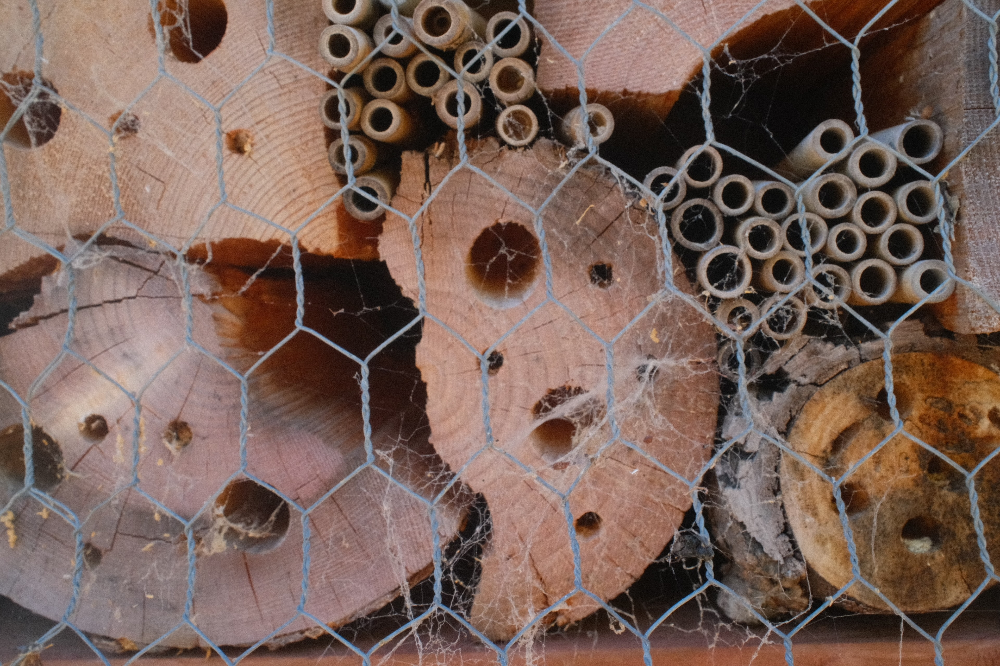
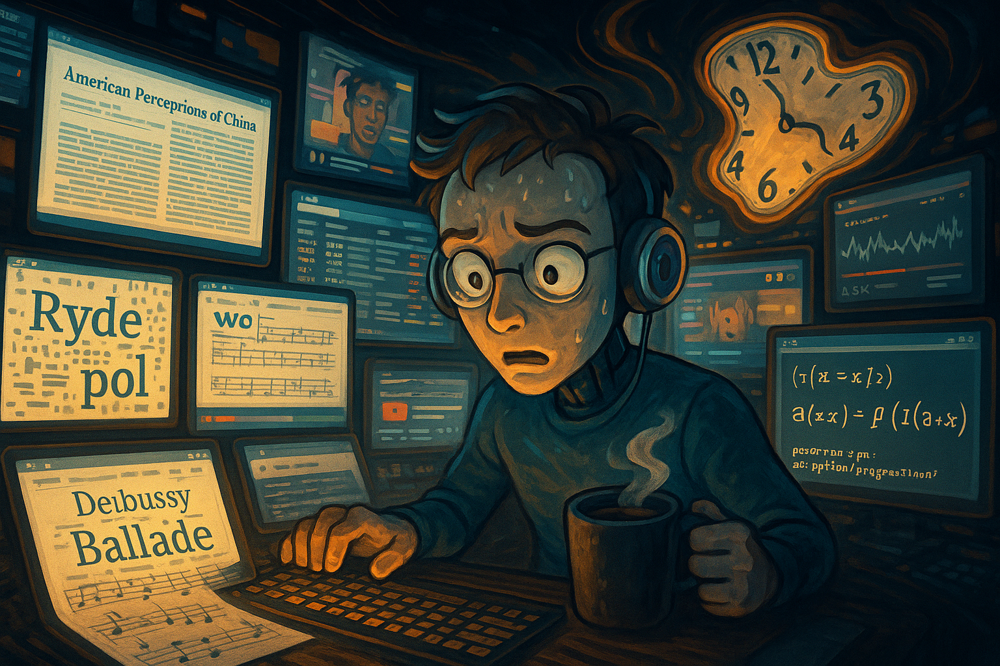
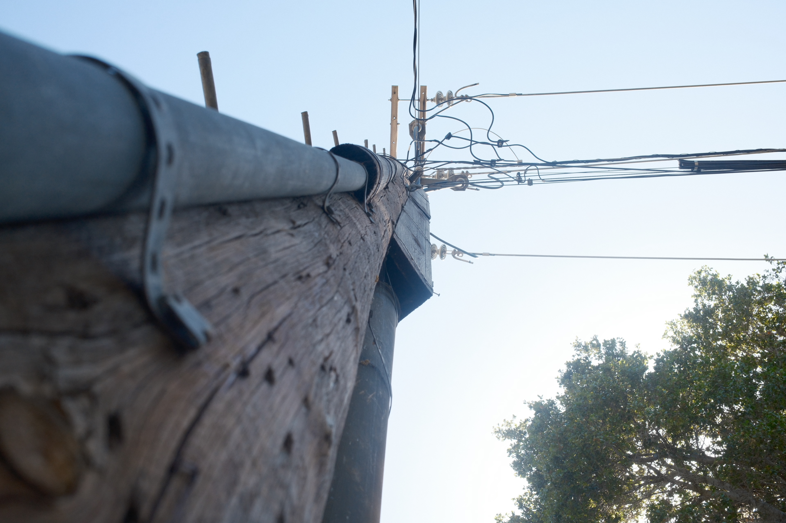

i think this was in the parking lot in the palo alto rinaconda library
pictures of my attention
taken around the bay area throughout june
The other day I was thinking that pictures of important things are still pretty boring to me...
I've pretty much already got the gist of Half Dome or the Pantheon.
I wondered if I could make pictures of unimportant things -- hardly discrete /things/ at all -- interesting (to me, at least), and then I started thinking about other stuff.
Last year, I took a theory of religion with Dr. Robert Orsi at Northwestern, and I was (and remain) struck by the marvelous way
he explained what kind of /thing/ ‘religion’ is – which I’ve always imagined as existing near Saturn
(probably due to the ‘man in the sky’ imagery) – unreachable, far-off, distant.
It is entirely possible that I’ve unfaithfully interpreted how Dr. Orsi would describe religion, so I’ll just say that sitting in his class made me change my mind – I started thinking of religion as something more like gravity – an ordering force intrinsic to being on this planet. Put by Berger 1967 in ‘The Sacred Canopy’
“The cosmos posited by religion thus both transcends and includes man.
The sacred cosmos is confronted by man as an immensely powerful reality other than himself.
Yet this reality addresses itself to him and locates his life in an ultimately meaningful order.”
So I think of religion now as the faith we have that the things we’re working on today will still exist tomorrow, that the people we knew today will remember us, that we’re part of a story, that the unfolding of our lives has some shape.
More elegantly said by Orsi 2003 (in "Is the Study of Lived Religion Irrelevant to the World We Live In?"): ‘There is no religion apart from this, no religion that people have not taken up in their hands. Religion approached this way is situated among the ordinary concerns of life, at the junctures of self and culture…”

In other words, the sublime is transcendental not because it is remote and incomprehensible, but because it is near and omnipresent.
Ever since we’ve been able to collect and actually interact with data based on ourselves (I’m thinking of ChatGPT), I feel like our relationship with data has taken on a similar timbre to our relationship with the sacred.
I’ve been lurking on r/ChatGPT for a few years, and I’ve been taken by a recent uptick in conversations (as well as vigorous engagement) over asking ChatGPT to tell the user something about themselves, for example, popular posts encourage others to ask ‘their’ ChatGPT to
“Generate an image of what it feels like chatting with me on any given day. Be as vulnerable, honest, brutal as you can be,”
or
“Generate an image of what you think I need most in life”,
or
“Generate side by side images of the kind of girlfriend it thinks I want versus the one it thinks I should have,”
or
“Generate an image based on your feelings towards me.”

What 'my' ChatGPT made when I asked it to generate what it feels like to chat with me on any given day etc...
Despite culturally (as well as historically, and let's be real here, objectively) being seen as a net /bad/ thing, there’s something nonetheleess reassuring about constant surveillance, and with the increased thoroughness of its scope – eyes that do not blink, do not get strained; a brain with perfect memory, recall, storage – comes a clearer, truer description of what kind of person we are.
There is an undeniable relief in the idea that something has been looking at us, remembering us, that the totality of you as a person is stored/recorded somewhere, in outsourcing the painful/annoying/humilitating task of fully knowing yourself to a larger, neutral, entity.
I don’t think that the people on r/ChatGPT are doing anything wrong or even stupid.
My concern is more about what this faith in more data implies for how we think about /what/ needs to be improved and how to improve it.
It’s not just the principle of constant surveillance, or what the people behind the cameras actually do with it (though these are very worrying things that are higher on the list
of ‘things to worry about in the next three months’), but what we believe that surveillance, data, can reveal about us.
If we do subscribe to the belief (and I think we increasingly are) that we can better explain the human condition / attain truth through /more/ data, /more/ tests, /more// training, then we design future infrastructure to accumulate more information; the tools with which we actually build a better world are only what is discrete, labellable, and generalizable.
I don't think getting more fine-grained data about ourselves brings us closer to truth.
This is borne out empirically -- we’ve always had access to vast text corpuses, but the leap in sophistication with large language models came (seemingly all at once) with the discovery of the attention mechanism, which allowed AI to weigh which parts of language matter most in a given moment, rather than treating every word equally.
(The landmark 2017 paper that introduced the transformers architecture, “Attention is All You Need”, has been so influential since then that it has not only spawned a whole genre of paper titles (i.e "X/Y/Z is All You Need") but also a coalition of cranky scholars complaining about said trend).
Poetically, it also suggests that meaning does not increase with quantification; thorough observation is itself insufficient.
Both humans and machines are flooded with more data than they can hold; for things to make sense, one must decide that X matters more than Y. We need attention.

While taking these pictures, I was thinking that “this flower probably never thought that someone would notice it; this piece of bark probably didn’t expect someone to stare at it for ten minutes.”
And you do this too, all the time.
You’ve looked at things that don’t look back, not because you were programmed to. You’ve remembered things about other people without any reason to do so.
Here, you might retort that there actually is a very obvious reason we pay attention –
Love, the endless stare, the shy glance away when your eyes are met, and that irresistible urge to keep watching after.